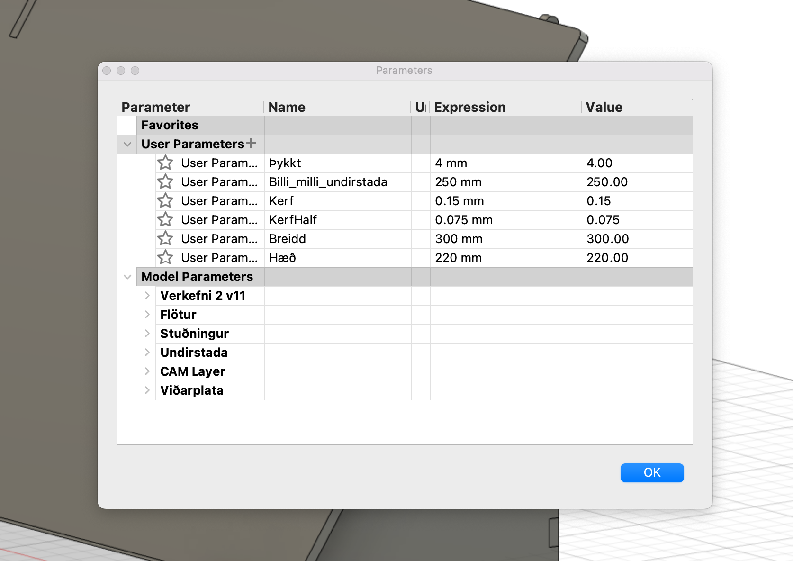
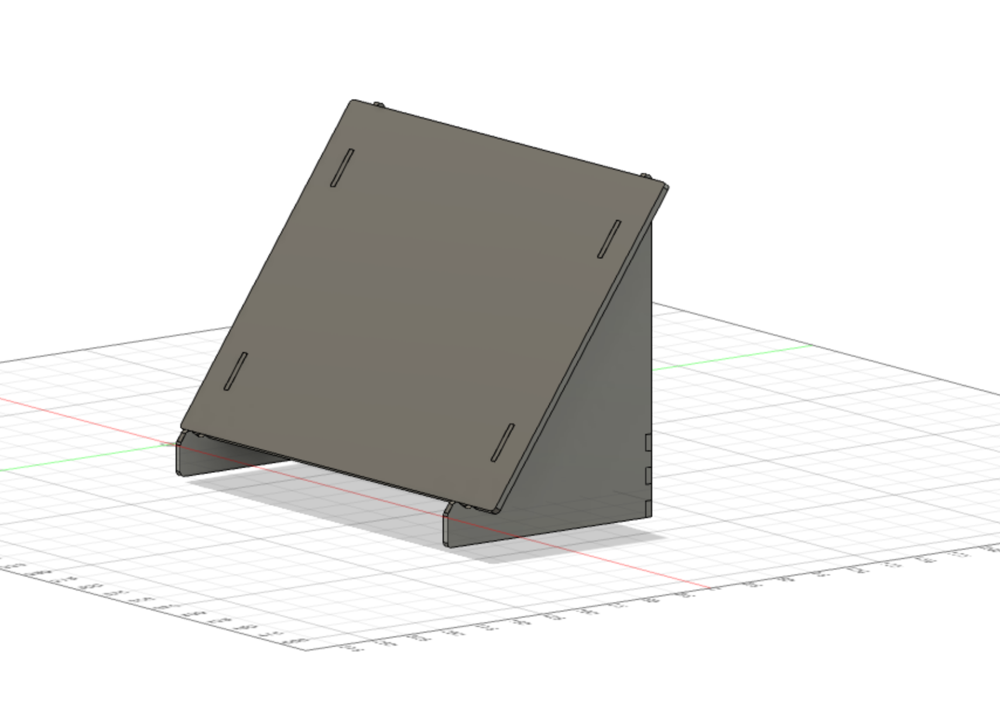
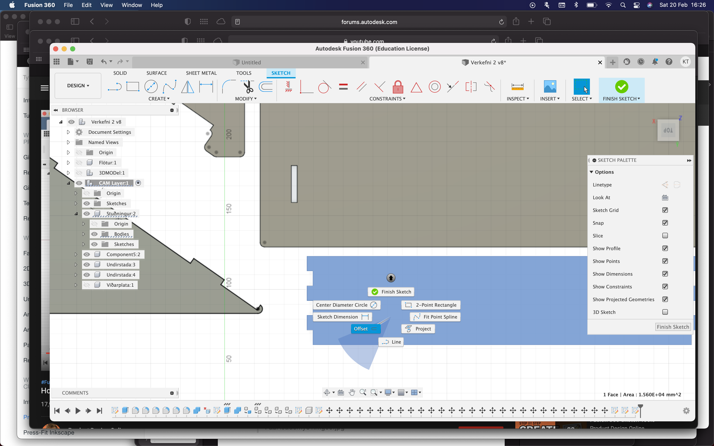
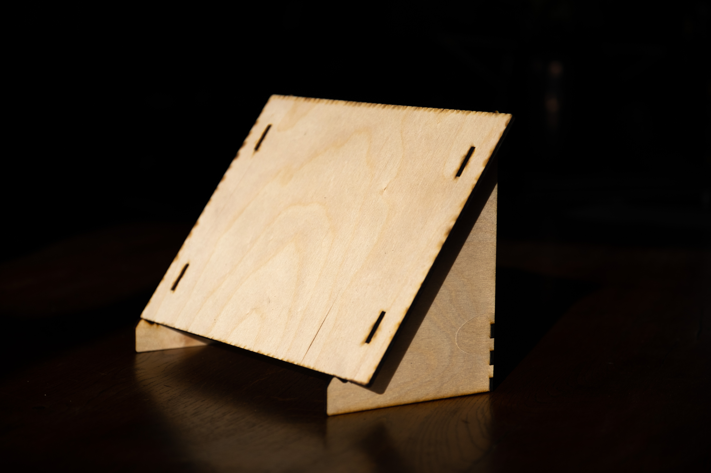
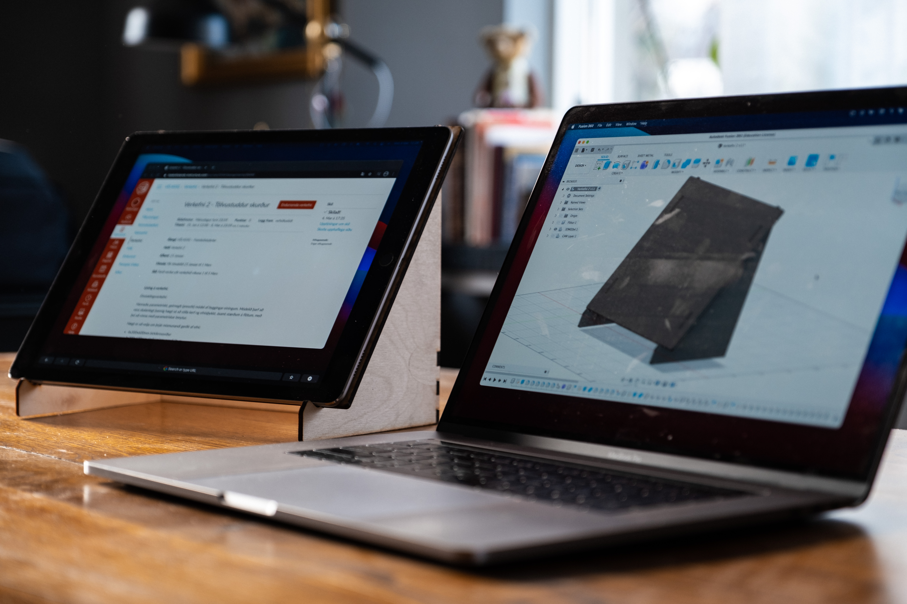

Verkefni 2 - Tölvustuddur skurður
Verkefnalýsing
Annað verkefnið í áfanganum framleiðsluferli vorið 2021 er tölvustuddur skurður. Það snýst um að hanna og teikna geirneglt módel sem svo er skorið út í birkikrossvið með geislaskera.
Inngangur
Mig langaði að búa til þess eitthvað gagnlegt en hafði ekki ákveðna hugmynd fyrirfram nákvæmlega hvað það væri. Ég byrjaði að leita á netinu af hlutum sem höfðu verið geislaskornir. Þar fann ég fartölvustand sem leit út fyrir að vera þokkalega einfaldur í framkvæmd. Ég ákvað því að búa til stand fyrir iPad svo hann gæti staðið uppréttur við hliðina á fartölvunni minni og hægt væri þá að nota hann sem aukaskjár.
Til þess að hanna hlutinn notaði ég Fusion 360 og til þess að búa til pdf skrá sem geislaskerinn gat lesið notaði ég Inkscape. Hluturinn var svo skorinn út á 4x300x600mm birkikrossvið.
Undirbúningur
Ég var að nota Fusion 360 í fyrsta skipti svo ég byrjaði á því að finna kennslumyndbönd á forritið. Ég fann þetta myndband sem fer í gegnum öll skrefin við hönnun í Fusion 360 svo í studdist við það. Ég sótti forritið í iPadinn sem mælir halla og svo stillti ég iPadnum upp þá stöðu sem ég vildi hafa hann í. Þannig ákvarðaði ég hallann á standnum. Svo fann ég upplýsingar um stærð iPadsins svo ég vissi hversu stór standurinn ætti að vera.
Hönnun
Fyrsta skrefið var að búa til stika svo auðveld var að skala hönnunina. Þar setti ég inn þykkt krossviðs, lengd milli undirstaða, lengd og hæð flatarins. Þannig er með auðveldum hætti hægt að nota sömu teikningu fyrir mismunandi þykkt af krossvið og mismunandi stærð af stærð af iPad.
Ég byrjaði á því að teikna upp aðra undirstöðuna og afritaði hana svo. Þannig ef ég myndi gera breytingar á upprunarlegu þá breytast báðar. Næst skref var að búa til plötuna sem iPadinn liggur ofan á. Stærðin á henni var ákvörðuð út frá stikunum sem gerðir voru út frá 12,9 tommu iPad Pro. Að lokum var stuðningi bætt við undirstöðurnar. Fyrir frekari útskýringu á hönnunni bendi ég á þetta myndband. Þar sem svipaður hlutur er teiknaður frá grunni.
Laser skurður
Til þess að undirbúa fyrir geislaskurð var hluturinn tekinn í sundur og íhlutunum raðað á sama plan. Kassi í sömu stærð og birkikrossviðurinn var teiknaður og íhlutunum raðað á hann til þess að vera viss um að allt kæmist fyrir á plötunni. Til þess gera ráð fyrir kerf voru allar línur færðar út um hálft kerf. Sjá á þessu myndbandi.
Næsta skref var að vista skránna sem dxf. Til þess að gera það fylgdi ég þessu myndbandi. Sú skrá var svo opnuð í Inkscape þar sem skráinn var svo vistuð sem pdf. Í tölvu sem tengd var við geislaskurðvélina var skráin svo opnuð og fylgt var eftir liðbeiningum sem fylgdu með vélinni.

Sett saman
Vel gekk að setja hlutinn saman og pössuðu allir hlutir vel saman. Samskeytin voru þó frekar laus og því þyrfti líklegast að líma íhluti saman til þess að gera hlutinn stöðugri. Svo líklegast hefur kerf verið aðeins þykkara en ég gerði ráð fyrir.
Vinnuframlag
Kerf: 3 klst
Söfnun upplýsinga: 1,5 klst
Hönnun: 5 klst
Undirbúningur fyrir geislaskurð: 3 klst
Geislaskurður og samsetning: 1 klst
Skráning og myndvinnsla: 6 klst
Vinnuskjöl
Hér má nálgast öll hönnunarskjöl
